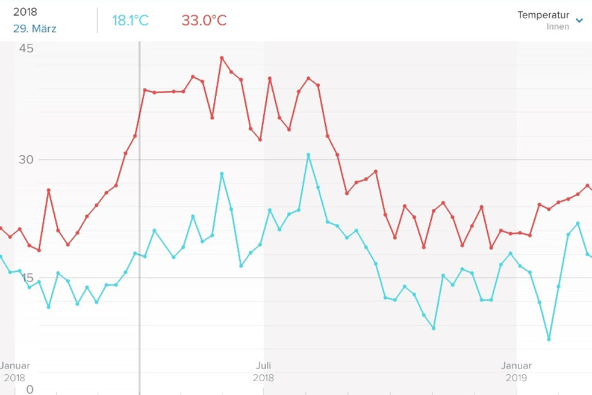

Research
The Rooftop Building is being used in the context of different research activities.

Air temperature (min, max) in the Rooftop Building in 2018 (source: UdK Berlin)
Long-term monitoring
- Building physics
- Indoor climate
- Thermal and electrical energy balances
Examination of occupant behavior
- Collection and evaluation of occupant data during the whole year (operation for education and research)
- Focussed examinaion of special use scenarios
Digital Twin
- Detailed system model of the building envelope, building services, and building automation
on the basis of Modelica
- Comparison of building monitoring data with a detailed simulation model
- Use case in VR-scenarios
Development and evaluation of energy management and Smart Building concepts
- Research on model and prognosis-based control concepts
- Innovative user interfaces and communication